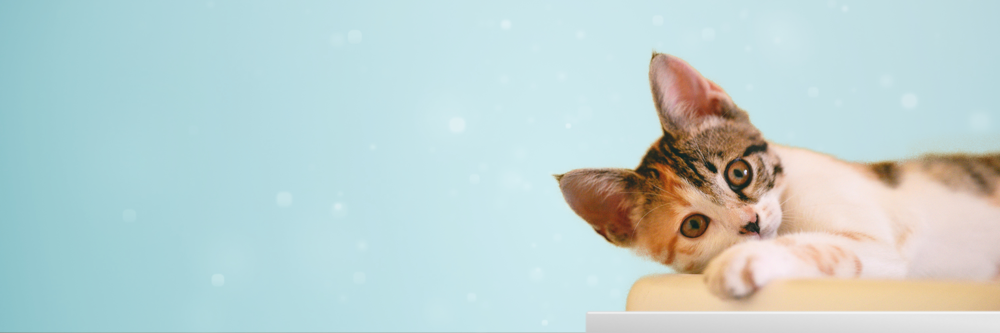
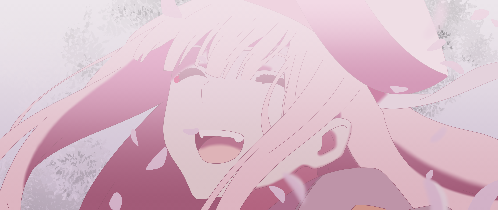

Perros
Les presentamos a uno de los tantos perritos que tenemos en Adopta a un Peludito.

Gatos
Les presentamos a uno de los tantos gatos que tenemos en Adopta a un Peludito.

Peludita Especial
Esta peludita es única en su especie, cuenta la leyenda que esta especie era muy famosa entre los antepasados denominados "Otakus" alrededor de todo el mundo, dichos antepasados llamaban a esta especie "Waifu".